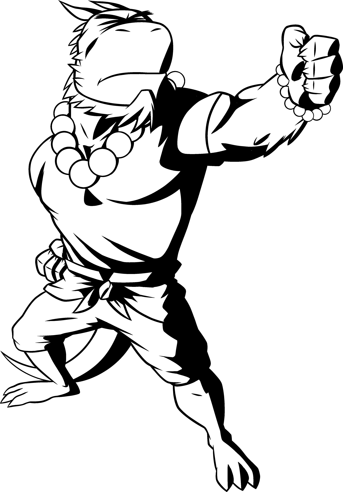
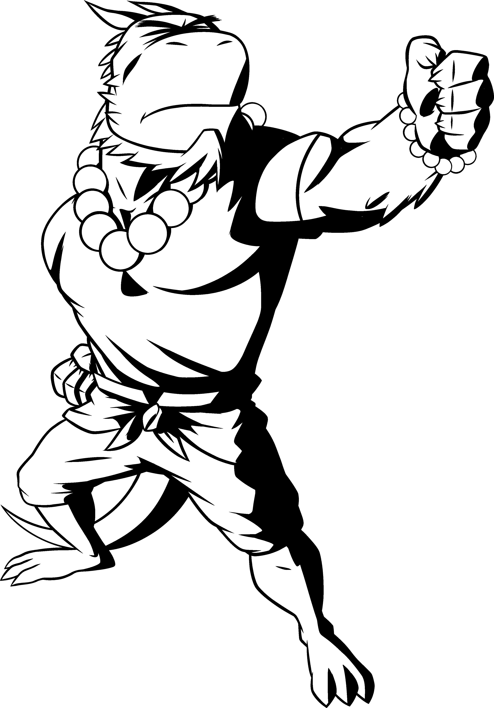

Un jeu de rôle minimaliste inspiré du scénario de Kalwrynn pour initier au jeu de rôle intitulé "Mener en 30min", où l'on joue dans un univers de fantasy inspiré du japon féodal.
Inspirations: Naruto, Avatar le maître de l'air, princesse Mononoke, Kung Fu Panda, Okami, Ori & the blind forest, Mushishi, Usagi Yojimbo...
- Version PDF de ces règles: OriMushi.pdf (19 pages, 4,4 Mo)
-
Feuille de personnage : OriMushi-FeuillePersonnage.pdf (346 Ko)
-
Feuille de personnage "Étendue" : OriMushi-FeuillePersonnageEtendue.pdf
-
Illustrations : OriMushi-illustrations.pdf (14 pages, 19 Mo)
-
Articles sur mon blog à propos de ce jeu : tag ori-mushi @ chezsoi.org
Création de personnage en 5min
- Choisissez votre apparence et un objet spécial (arme, objet magique...) parmi les illustrations, ou inventez-les ! Les objets spéciaux sont des objets magiques ou que leur possesseur maîtrise avec virtuosité.
- Inscrivez sur votre feuille de personnage son nom, son activité et cochez 3 compétences.
L'inventaire de départ des personnages est complètement libre : il s'agit de tous les objets qu'ils souhaiteraient transporter sur eux. Ces objets n'étant pas spéciaux, ils n'octroient pas de dé supplémentaires lors des jets.
Activités
Voici quelques suggestions pour les joueurs, à découper avant la partie :
| Apothicaire : je concocte des remèdes à partir de plantes sauvages. | Conteur : je raconte de manière captivante les plus incroyables histoires. | Marchant : sur ma route, je troque de précieux objets et ingrédients. |
|---|---|---|
| Mushishi : je perçois les esprits de la nature, et m'efforce de les apaiser. | Ronin : samouraï sans maître, je voyage en onorant le code moral du bushido. | Autre : inscris au dos une autre activité de ton choix. |
Jets de dés
1d6 minimum, +1d6 par compétence et Objet Spécial applicables. Selon le meilleur résultat obtenu aux dés :

- ⚅ : c'est réussi !
- ⚄ : c'est réussi mais...
- ⚃ : c'est raté mais...
- ⚂ / ⚁ / ⚀ : c'est raté
De plus :
- si deux ⚅ sont obtenus : c'est une réussite épique !
- si deux ⚀ sont obtenus : c'est un échec critique
- sur un ⚄ ou ⚃, le MJ peut également proposer un dilemme : le joueur se voit proposer un choix cornélien entre deux options exclusives. Son personnage peut par exemple obtenir quelque chose au prix d'un sacrifice, ou bien se rabattre sur une réussite partielle.
- actions difficiles : lorsque le personnage d'un joueur tente d'accomplir une véritable prouesse, une action à la limite de ses capacités, le MJ peut alors indiquer qu'au moins deux dés de valeur ⚄ ou ⚅ sont nécessaires pour réussir l'action.
- actions en opposition, comme par exemple un affrontement : un jet est effectué par personnage, celui obtenant le plus de ⚅ l'emporte. En cas d'égalité, on considère les ⚄. Si l'égalité persiste, aucun personnage n'a l'avantage.
- actions conjointes : un personnage assistant un autre à réaliser une action lui octroie un dé bonus, si cette aide est jugée pertinente par le MJ.
Éléments clefs à établir en début de partie
- « L'histoire se déroule dans un japon médiéval imaginaire. Il existe de la magie et des monstres. »
- Le meneur de jeu demandera des jets aux joueurs pour les actions risquées de leurs personnages.
- Les joueurs se connaissent déjà et voyagent ensemble, et c'est d'ailleurs leur objectif commun : explorer le monde ! Ils ont déjà traversé de nombreuses contrées et aidé bien des gens.
Scène 0 - Course poursuite !
Bien que cela rallonge légèrement la durée de la partie, je trouve très judicieuse l'idée de Kalwrynn de commencer in media res.
Je vous suggère donc de commencer la partie en décrivant rapidement un joli décor de chemin de terre sinuant parmi les champs et les herbes folles, par une paisible après-midi printanière, au pied d'une montagne... Où les personnages des joueurs descendent le chemin en pente à perdre haleine, poursuivis par un troll-kappa dont ils ont piétinés le jardin par mégarde ! Cette créature, sorte de taupe humanoïde avec un bec, est fâchée et pas du tout disposée à discuter !
Décrivez aux joueurs les environs pour leurs donner quelques idées d’échappatoire : l'orée de la forêt de bambous, la descente un peu raide vers un lac, les hautes herbes balayées par le vent...
Au terme de cette scène, les joueurs doivent rejoindre le village, par le chemin ou le lac, quitte à faire une ellipse ou à indiquer qu'il s'agit de l'étape suivante de leur voyage, où on leur a vanté une recette locale de poisson frit...
Ressources
Illustrations
S'inspirant de Sventovia du Grümph, nous vous encourageons à imprimer des images au préalable, pour faciliter l'immersion des joueurs : des illustrations de personnages et ce dont ils peuvent s'équiper (armes & objets).
Vous trouverez dans ce PDF 12 illustrations de personnages des joueurs, 4 de PNJs, 6 de différents objets spéciaux, et enfin une illustration de l'esprit-dragon : OriMushi-illustrations.pdf (12 pages, 13 Mo)
Ambiance musicale
Quelques suggestions de bande sons originales : Mushishi, Okami, Ori and the Blind Forest, Princess Mononoke.
Cartes de lieux
Si vous aimez avoir un support visuel pour vos parties, voici quelques belles cartes qui peuvent parfaitement servir de support à une partie d'Ori Mushi :
- Bains japonais - Czepeku
- Sanctuaire de la forêt - Czepeku
- Monastère des cerisiers en fleurs - Czepeku
- Cache du Oni - Ferme de riz - Czepeku
Ori-Mushi version "Étendue"
Les sections suivantes fournissent de quoi jouer dans l'univers d'Ori-Mushi au-delà de 30min, pour des parties de plusieurs heures. Cela signifie :
- quelques éléments sur l'univers du jeu
- un concept fort de groupe de PJs
- des règles supplémentaires de magie et progression / gain d'expérience
- de nouveaux scénarios
Le monde
Le monde d'Ori Mushi est une forme de Japon médiéval avec de nombreux éléments fantastiques.
Le monde n'est volontairement pas décrit en détails afin de :
- vous permettre, MJ & joueurs, de le détailler par petites touches, au fur et à mesure de vos parties.
- d'inclure toutes les références que vous souhaitez à des univers de fiction existants, qu'il s'agisse de lieux, de personnages, d'organisations...
Les éléments suivants sont néanmoins indispensables :
- l'existence des komusō, des individus dont la fonction est respectée dans tout le monde connu. Les komusō possèdent une forte indépendance, mais vous pouvez choisir de les rattacher à une organisation de votre choix : gouvernement, religion, force militaire...
- la magie existe, et est enseignée à travers de nombreuses écoles de jutsu. L'énergie magique provient de la nature : le Mana, parfois nommé chakra ou chi, provient des Mushis, des créatures élémentaires invisibles...
- tous individu possède un potentiel mauvais enfoui, un Oni, qui peut s'éveiller, le dévorer et le transformer en démon.
Les PJs sont des komuso
Avant que les joueurs ne créent leurs personnages, informez-les de la nature de leur groupe : il vont incarner des komusō.
Les PJs sont des personnes venant de conclure un apprentissage d'élite (ou leur reconversion) dans un domaine, quel qu'il soit : artisan, guerrier, sorcier...
En échange de cette formation d'excellence qu'ils ont reçu, ils ont accepté ensuite, pendant un an, d'assumer la fonction de komusō, et pendant un an de former un groupe suivant les préceptes de cette charge :
- Vœu d'Errance : un komusō ne reste jamais plus de trois nuits dans un lieu, à moins d'une urgence vitale.
- Vœu de Pauvreté : un komusō ne conserve jamais d'argent pour lui. Il subsiste de la générosité des autres, qui leur offrent en général volontier le gîte et le couvert. Un komusō peut faire du troc.
- Vœu d'Assistance : un komusō accepte toujours d'aider quelqu'un en difficulté, de lui porter secours.
- Vœu d'Impartialité : un komusō se doit d'être impartial et juste. En cas de conflit, sans qu'ils ne possèdent la moindre autorité officielle, les komusō sont parfois sollicités comme juges impartiaux.
- Vœu de Préserver la Vie : un komusō ira jusqu'à se battre pour une vie. Il protège également la nature, animaux, plantes et autres créatures.


En-dehors de ce code moral, les komusō sont d'origines très diverses. Ils ont souvent des connaissances et des compétences très complémentaires au sein d'un groupe, pouvant parfois même provoquer des tensions.

Ils doivent tous respect et obéissance à un daïmio, qui a sélectionné les membres du groupe des komusō, et à qui ils rendent compte. Il peut parfois leur demander d'accomplir certains missions spécifiques.
Au terme de leur mission de komusō, l'appréciation finale du daïmio sera cruciale pour la poursuite de carrière des PJs dans leur activité.
D'un point de vue ludique et narratif, cette contrainte sur la nature du groupe des PJs offre plusieurs avantages :
- ils n'ont pas le choix de travailler ensemble.
- ils ont des objectifs communs, propices à générer de belles aventures.
Les Vœux des komusō sont sources de points d'expériences : un joueur sauvant une vie en danger ou épargnant un adversaire meutrier gagne +1 Ori.
Les Mushis sont partout
Un mushi est un organisme vivant primitif et invisible aux yeux des humains. Il en existe de différentes sortes, mais ils sont essentiels au bon fonctionnement des écosystèmes : ils sont pour les êtres vivants tantôt un source d'énergie et de nutriments, tantôt un lien essentiel entre eux.
Les mushis se comportent comme des micro-organismes, et ne semblent pas doués de conscience. Bien qu'invisibles, ils peuvent être semblables à des colonies de fourmis, reliant des plantes dans une forêt, ou à des champignons tapissant une ruine.
Les mushis ne sont ni mauvais ni bienveillants, ils sont constitutifs de la nature.
Les mushis produisent naturellement du Mana, une énergie magique permettant de réaliser des jutsus.

Ori versus Oni
Section en cours de rédaction...


Jutsus
Les jutsus sont des techniques ancestrales permettant de maîtriser une forme de magie.
Il existe plusieurs familles de jutsus :
| Contrôle du sable : modeler du sable pour former toute sorte d'objet, le projeter... | Téléportation : déplacement instantanné à courte distance de soi, d'un objet, d'un adversaire... | Clonage : se dupliquer, dupliquer un objet... |
|---|---|---|
| Hypnose : immobiliser quelqu'un par le regard, le faire parler, lui donner des ordres... | Régénération : soigner une blessure, faire repousser un membre... | Autre : inscris au dos un jutsu de ton invention. |

Employer un jutsu nécessite 1 point de Mana, et un jet de dé. Chaque famille de jutsu a une réserve de Mana associée.
Lorsqu'on maîtrise une famille de jutsu, on peut tenter n'importe quelle technique propre à cette spécialité. On peut aussi devenir expert d'une technique en particulier, et on gagne alors +1 dé au lancer lorsqu'on emploie cette technique.
Certains objet spéciaux rares peuvent conférer +1 dé au lancer pour une famille de jutsu spécifique.

La carte du monde
Au fur et à mesure de leur pérégrinations, les komusō tracent une carte.
Cette carte mentionne les lieux notables traversés par le groupe, et éventuellement des éléments sur le relief, les cours d'eau, l'environnement en général et les bâtiments découverts en chemin.
En tant que MJ, lors de votre première partie, vous pouvez au choix :
- donner une feuille A4 vierge à vos joueurs
- fournir un fond de carte de votre univers favori, ou dessinée par vos soins
La carte doit comporter une rose des vents indiquant les directions cardinales : Nord, Sud, Est, Ouest.
À chaque fin de partie, un joueur du groupe se dévoue pour compléter la carte. Le PJ de ce joueur gagne +1 Ori s'il inclut au moins un tout petit dessin d'une plante, d'une créature ou d'un personnage qu'ils ont rencontré.
Progression & expérience
La suite est en cours de rédaction...
| Coût en Oris | Bénéfice |
|---|---|
| ? Oris | une nouvelle compétence |
| ? Oris | +1 réserve de Mana d'un jutsu |
| ? Oris | une nouvelle technique de jutsu |
| ? Oris | un nouveau jutsu |
| ? Oris | +1 Oni |
L'acquisition de compétences et de jutsus / techniques n'est possible que dans ces conditions :
- durant une ellipse temporelle entre deux lieux / scénarios
- le PJ doit avoir convaincu un senseï de lui transmettre son savoir

 



Blessures
Création des personnages
Scénario : les disparus du festival du printemps
Licence, sources & remerciements

Ori Mushi a été conçu par Lucas Cimon. Ce jeu est placé sous license Creative Commons Attribution 4.0 International.
Ce jeu est diffusé à prix libre. Si vous souhaitez me soutenir, vous pouvez me faire un don sur lucas-c.itch.io. Les fichiers sources ayant permis de générer ce PDF sont disponibles sur GitHub. Cette version est la v1.0.
Je serais ravi d'avoir vos retours si vous jouez à ce jeu ! Racontez-moi comment s'est passée votre partie via un commentaire lucas-c.itch.io ou sur mon blog.
Merci enfin aux développeurs des logiciels libres employés pour réaliser ce jeu : le navigateur Firefox, le logiciel de dessin Gimp, l'éditeur de texte Notepad++, le lecteur de PDF Sumatra PDF, le language de programmation Python, les bibliothèques de code mistletoe & weasyprint.
Polices : Odachi & Xangda Shiny
Illustrations dans ce document :
- magic circle 2 par NNao - CC BY-NC-SA 3.0
- Epic Chibi Ninja par dmr12890 - CC BY-NC-SA 3.0
- Kyoshi Earthbender Lineart par Aedo Sama - CC BY-NC-SA 3.0
- Noh Demon par weremagnus - CC BY-NC 3.0
- Quick samurai sketch par hidanbasher - CC BY 3.0
- Katanas par Halibutt - CC BY 3.0
- Komainu Raican & Kuma par HIJODELOPIO - CC BY 3.0
- Shinobi par HIJODELOPIO - CC BY 3.0
- fille-samouraï-guerrier-japon & parapluie-écran-chinois @ pixabay.com
- Chinese New Year Folk Ornament, Decorative Ying Yang sign & Dragon frame @ freesvg.org - domaine public
- Image from "A handbook of cryptogamic botany" (1889) - domaine public
{kind=link}